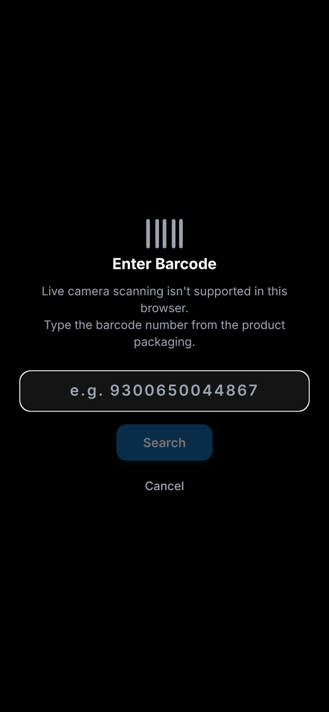
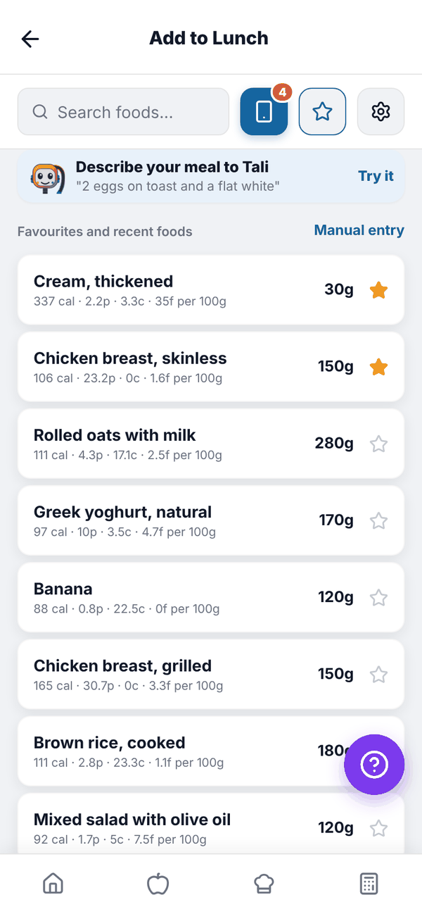
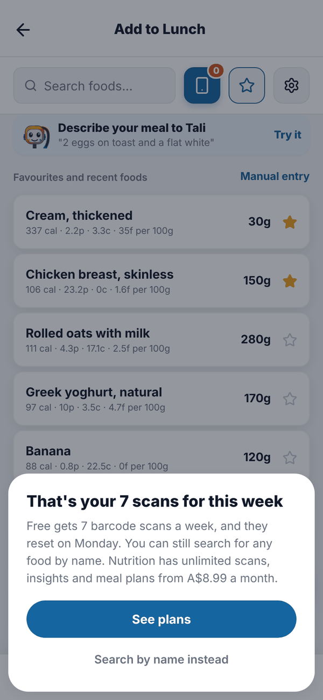

Totality Nutrition guide
Barcode scanning
Scan a packaged food's barcode to log it, how the 7 scans a week on Free work, and what to do when a barcode isn't found.
Scanning a barcode finds a packaged food without typing. Barcode scanning is Free 7 a week, unlimited on Trial and Paid.
Scan a barcode#
- Open your food log and tap + on a meal.
- Tap the blue phone icon next to the search box.
- The first time, allow camera access.
- Hold the barcode inside the frame. When it reads, you'll see "Barcode scanned!".
- The food opens with a Scanned from barcode tag. Check the Per 100g numbers, choose your serving and tap Add to your meal.
If the camera won't pick it up, tap Enter barcode manually, type the number printed under the barcode (for example 9300650044867) and tap Search.

Where the food data comes from#
The app checks its own food list first (foods other people have already scanned and saved), then Open Food Facts. If a product's label has no serving size, it starts at 100g and tells you so. If the numbers look wrong, tap Edit on the Per 100g card and copy them from the label.
Scans on Free#
Free accounts get 7 barcode scans a week. The week runs Monday to Sunday, Sydney time, and resets on Monday.
- The scan icon shows a small number: the scans you have left this week.
- Home shows "4 of 7 barcode scans left this week" on the "You're on Free" card.
- A scan counts when the scanner reads a barcode (or you search a typed number), even if the product isn't found.
When you've used all 7, tapping the scan icon shows "That's your 7 scans for this week". Tap See plans to look at Nutrition, or Search by name instead. Searching by name is always unlimited.


Questions#
It says "No food found for barcode".
That product isn't in our list or in Open Food Facts yet. Search by name, or use Manual entry. Once you log it, it helps the next person.
Did a failed scan use one of my 7?
Yes. On Free a scan counts as soon as a barcode is read, found or not.
When do my scans reset?
Monday at midnight, Sydney time.
The camera shows "Camera Permission Required".
You said no to camera access. Allow the camera for Totality Nutrition in your phone's settings, then try again, or type the barcode number.